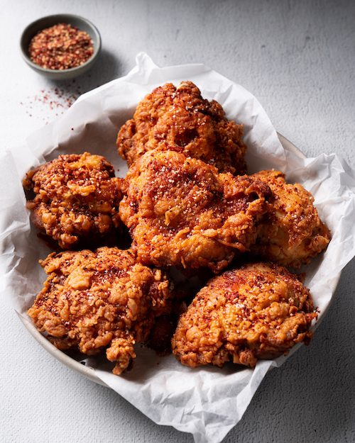

<!DOCTYPE html>

<html lang="en">
    <meta charset="UTF-8">
    <title>Odin recipes</title>
</html>

<body>
    <h1>Spicy Fried Chicken</h1>
    <p></p>
    
    <p></p>
    <h2>Description</h2>
    <p></p>
    <p>This spicy fried chicken recipe is finger-licking good! It's a keeper and a must-try.</p>
    <p>Here are the following ingredients required to make the dish.</p>
    <p></p>
    <h2>Ingredients:</h2>
    <ul>
        <li>Salt and pepper</li>
        <li>Buttermilk</li>
        <li>Cayenne pepper</li>
        <li>all-purpose flour</li>
        <li>Garlic powder</li>
        <li>Paprika</li>
        <li>Vegetable oil</li>
    </ul>
    <h2>How to make the recipe:</h2>
    <ol>
        <li>Sprinkle chicken pieces with salt and pepper; place them in a deep-sided baking dish.</li>
        <li>Whisk buttermilk, hot pepper sauce, and 1 teaspoon cayenne pepper together in a large bowl; pour over chicken, tossing to coat all sides. Cover the dish and let it marinate.</li>
        <li>Remove chicken from buttermilk mixture; shake off excess. Discard remaining buttermilk mixture. </li>
        <li>Place flour, 1 tablespoon cayenne pepper, garlic powder, paprika, salt, and pepper in a container. Place 2 or 3 pieces of chicken into container and shake well to coat chicken.</li>
        <li>Heat oil in a deep fryer or large saucepan to 350 degrees F (175 degrees C). </li>
        <li>Gently place chicken pieces into hot oil and fry until chicken is cooked through and golden brown, about 8 to 10 minutes for breasts and wings, and 13 to 15 minutes for thighs and drumsticks. </li>
    </ol>
</body>